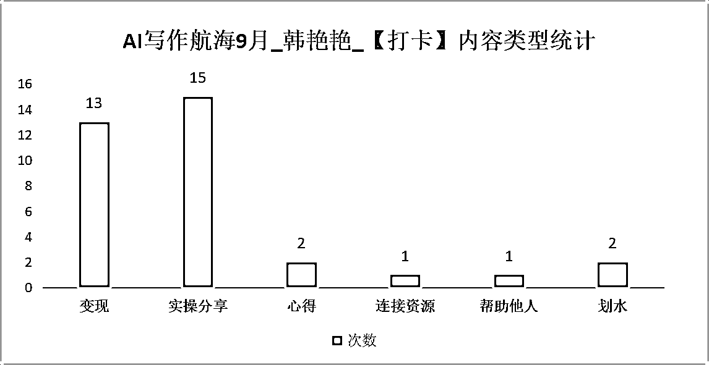

来源：https://yvpy33v1ybq.feishu.cn/docx/BCCedDJswoXPzoxv1decfliRnvd
因为白天上班晚上赶稿子，赶在报名最后一天登上了【AI写作航海9月】的大船。也是 #首次参加航海。
全勤打卡21天，S级8次，好事11次。分享实操细节15次，拿“钱”说事13次。
也伴随着【打卡心路变化】......
对于看了我航海打卡的AI写作
对打卡这件事，我会多一点真诚，我当初是小白的时候，【航海手册】给了我方法论指导，也需要在实操的时候，有人拿着根笔，指着我的屏幕告诉我：...AI生成的 二表哥不能通过点击“复制”图标去复制，而且要选中表格粘贴到excel中，再复制到word里才能是表格...
我和【航海打卡】的故事:
因为白天上班晚上赶稿子，赶在报名最后一天登上了AI写作航海9月的大船。也是首次参加航海。
我是适合这个航海的，最近小半年保持至少每周、最近两个月保持每天，都在AI写作。
开船即定了任务：每天打卡且争取“S级”至少“好事”。
航行结束交出了打卡答卷：

对于首次参加航海的【航海打卡】我是有心路变化的：
刚开始的摩拳擦掌，摸索拿“好事”、“S级”而去强调变现；
中间的发现变现数据片面性可能误导小白和放大焦虑，于是保持实操分享，增加心得、帮助他人等和AI写作相关事。
到最后的，航海要结束了，“划水”打卡（我愿意解释为，有的时候，完成比完美更重要）。
这是一个多么典型的心路历程。
对分享变现数据的感受：
有感受到教练审核打卡内容，对“变现”数据的谨慎，也多次和比我稍晚入行AI写作的前同事去聊，那么密集且高价的变现数据分享，容易给人“so easy”的错觉，不切实际的期待容易打击初学者的抗挫力。
我的那些变现数据真实，也片面，小白看不到写手接单背后的退单、坏单，也不清楚深耕入局才知道的规则。
对AI写作的推荐：
AI写作这件事，是非常棒的，不只是未来职业必备技能，也是非常好的个人输出能力、逻辑能力试炼场。
AI写作变现这件事，也确实是切实可行的，高客单天花板足够高且相对容易达到，门槛非常低，只要行动力拉满，老少皆可分一杯羹。
对看了我航海打卡小白：
对打卡这件事，我会多一点真诚，我当初是小白的时候，#航海手册 给了我方法论指导，但同时，我也需要在实操的时候，有人拿着根笔，指着我的屏幕告诉我：...chatGPT生成的表格不能通过点击“复制”图标去复制，而且要选中表格粘贴到excel中，再复制到word里才能是表格...但是Claude生成的表格只有点“复制'图标才能粘贴到word中...
希望我的打卡变现分享，没有迷茫到AI写作小白，未来变得更好的你们，会感激此时韧性满满的自己。
希望我的打卡实战分享，有帮助到AI实操小白，让你知道，这条路，不孤单。
一些想对生财说的话:
1）去过3次生财杭州总部，那个办公室养猫的地方，那个半夜一进门就是看到几个员工在打台球的地方，那个办公室常开放给圈友组织线下活动的地方。原来生财的办公室是这样，哦不，原来生财文化显象出了这样的办公室文化。
2）参加过4次生财的线下聚会，认识了很多生财小伙伴，生财规则制约了线下聚会，也督促和保护了圈友。点赞。
PS：如果我的分享还算及格，能不能送我个生财大鼠标垫，如果很不错，能不能送我十个生财大鼠标垫，让我去跟小伙伴显摆~不用快递，一个微信消息我自己就跑去了~
12月航海flag:
实战经验的沉淀输出，需要体系化。